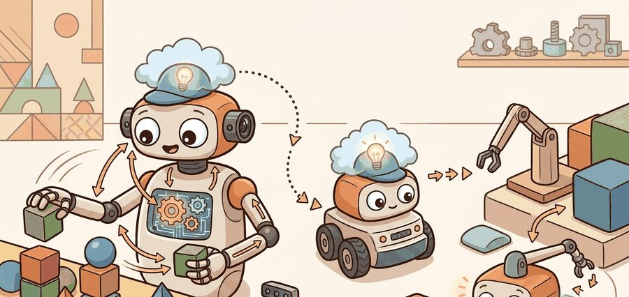
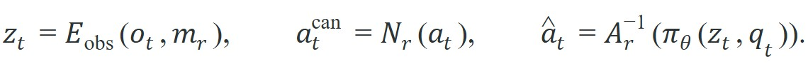
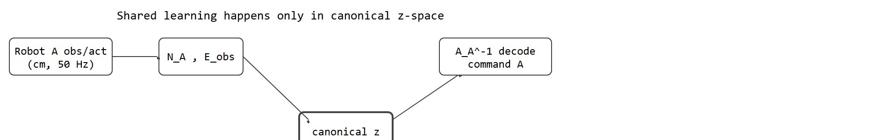

"A trajectory is not transferable until every hidden unit, frame, and control rate has been made painfully explicit."
An Embodiment Auditor

This section assumes familiarity with coordinate frames and camera topology from section 4.6, and with action chunking from section 22.2, as both concepts surface directly in the failure analysis below. The canonical latent interface introduced here is extended in section 35.3, where it must additionally support a slower reasoning subsystem operating on a different clock. The dataset heterogeneity problem is treated at scale in section 24.1, and the action tokenizer design choice that competes with the normalization approach here is examined in section 34.5.
A warehouse arm trained on a million grasps fails immediately when loaded onto a humanoid, even when the task is identical. The culprit is rarely the policy weights: it is that "move +x by 0.05" means centimeters on one robot, meters on another, and points in a camera frame on a third. Today, labs are merging demonstration datasets from dozens of platforms to train generalist policies, and getting this right is the difference between a model that transfers and one that memorizes noise. You will learn to design a canonical latent interface, audit trajectory metadata for semantic drift, and apply the normalization transforms that make pooled data genuinely comparable across bodies.
A warehouse arm and a humanoid can both grasp the same cup and log the same success, yet still poison each other's training. One says "move 5" and means centimeters; the other means meters; nothing in the raw data reveals the difference. Pooling demonstrations from many robots only helps if the shared learner sees comparable events. As Figure 35.2A illustrates, several robot bodies contribute to one policy only after their trajectories are translated into a shared contract, not simply mixed as if every robot meant the same thing. A mixed dataset can silently combine different camera frames, control frequencies, action saturations, and success definitions. When that happens, the model spends capacity learning translation noise instead of task structure. In the Open X-Embodiment experiments (2023), a policy trained on raw-mixed data from 22 robots transferred to a held-out robot at roughly 30% success. After unit normalization and metadata conditioning, the same architecture reached 68% on the same tasks, with no change in model size or training compute. Doubling the raw dataset size without fixing the schema moved success from 30% to 34%: two months of additional data collection bought less than proper unit normalization did in an afternoon of engineering.
This is why cross-embodiment training lives at the boundary between datasets and policy design. The data schema is part of the model architecture. If the schema is wrong, added capacity only lets bigger models memorize the wrong equivalences more efficiently.
Robot body, camera pose, control rate, action units, and success definition are not bookkeeping. They are the side information that tells the learner what two trajectories are allowed to share.
Before going further, one term needs pinning down: "canonical" here just means a single shared convention (one unit system, one gripper scale, one clock) that every robot's raw data is converted into before the policy ever sees it, so the policy always trains on the same kind of number regardless of which robot produced it.
A common pattern, shown in Figure 35.2B below, is to map robot-specific observations and actions into a canonical latent contract:

Here $m_r$ is embodiment metadata, $N_r$ normalizes robot-specific actions into a canonical representation, and $A_r^{-1}$ maps the canonical action back into robot-specific commands. The policy $\pi_\theta$ only works if those adapters preserve the semantics that matter for transfer.

Code Fragment 1 shows the smallest useful version of that normalization idea, where a canonical range is a shared numerical scale (here, a common position unit and a 0-to-1 gripper value) that every robot's raw commands are converted into before training. The point is not numerical sophistication. The point is to make the unit conversion visible.
# Normalize position and gripper commands from two robots into one canonical range.
# The policy can only share data when these conventions are explicit.
robots = {
"arm_a": {"xyz_scale_cm": 1.0, "gripper_closed": 0.0},
"arm_b": {"xyz_scale_cm": 2.5, "gripper_closed": -1.0},
}
def normalize_command(robot_name: str, dx_cm: float, gripper_value: float) -> tuple[float, float]:
meta = robots[robot_name]
canonical_dx = dx_cm / meta["xyz_scale_cm"]
canonical_gripper = 1.0 if gripper_value == meta["gripper_closed"] else 0.0
return canonical_dx, canonical_gripper
print(normalize_command("arm_a", dx_cm=1.0, gripper_value=0.0))
print(normalize_command("arm_b", dx_cm=2.5, gripper_value=-1.0))(1.0, 1.0) (1.0, 1.0)
The expected output is matching canonical commands for two different robots after embodiment-specific decoding and normalization. If these tuples diverged for the same semantic command, pooled training would quietly mix incompatible actions and poison cross-embodiment transfer.
Before reading on, consider this: if two robots perform the exact same cup-grasp but one sends position in centimeters and the other in meters, how many training steps does the shared backbone waste learning that unit conversion before it can learn anything about grasping?
Why does this latent interface enable sharing at all? The encoder $E_\text{obs}$ maps the same physical event to nearby points in $z$-space regardless of which robot produced it. Consider a Franka Panda gripper closing at 0.08 m/s on a cup and a WidowX 250s gripper closing at 0.04 m/s on the same cup: both map to nearby $z$ coordinates. That proximity lets gradient updates from the WidowX slice improve the Franka policy, and vice versa. In Open X-Embodiment, a ViT-B/16 encoder (a Vision Transformer image encoder with roughly 86 million parameters) conditioned on embodiment metadata reached same-task cluster purity above 0.75 across 22 robots, where cluster purity is the fraction of trajectories in a cluster that share the same task label. Without metadata conditioning, purity dropped to 0.41: the backbone spent its capacity distinguishing robots rather than learning tasks.
A poorly designed canonical space places trajectories from different robots in unrelated clusters. The shared backbone then learns embodiment identity instead of task structure. This failure has a name: the same-task clustering test. The test asks: "Do same-task, different-embodiment trajectories cluster together in $z$-space?" If they do not, the interface is the wrong abstraction, and transfer stays near zero even with a large dataset. The test also matters for hardware safety. A robot with poor cluster overlap receives gradients that push its representations toward unrelated motions. On physical hardware, a mis-timed command can damage actuators or drop a payload. The clustering succeeds when the encoder trains with a contrastive or task-conditioned objective. That objective penalizes distance between same-task pairs regardless of source embodiment. It pulls representations toward contact geometry and end-effector velocity rather than joint configurations.
So far: the same-task clustering test tells you whether a canonical space is working, poor clustering is also a hardware-safety signal because misdirected gradients can produce mis-timed commands, and a contrastive or task-conditioned training objective is what makes clustering succeed in the first place.
Separate per-robot policies win when embodiments impose fundamentally incompatible action spaces. Consider a Boston Dynamics Spot (12-DOF legged locomotion, proprioceptive joint torques at 1 kHz, where DOF is the number of independently controllable joints) and a Franka Panda (7-DOF Cartesian impedance control, where the controller regulates end-effector position and compliant force response rather than individual joint angles, at a 500 Hz communication ceiling). They share a control rate but differ so deeply in contact physics and action dimensionality that a single canonical action vector distorts both.
Think of the canonical latent space like a shared street map used by cyclists, drivers, and pedestrians. Each traveler records a route in their own units (pedal strokes, fuel stops, paces), but the moment those routes are plotted on the same map, a shortcut discovered by the cyclist immediately shows up as a shortcut for the driver too. In the same way, once both robots encode the same cup-grasping event into nearby coordinates in $z$-space, a gradient update from the WidowX trajectory nudges the map in a direction that also improves the Franka's representation, because both are pulling on the same region of the shared space.
normalize_command() converts arm_a's centimeter-scaled position and 0.0-closed gripper value, and arm_b's 2.5-scaled position and -1.0-closed gripper value, into the identical canonical pair (1.0, 1.0), confirming the two robots' raw commands describe the same physical action.Input: Multi-robot dataset $\mathcal{D} = \{(o_t^r, a_t^r, m_r)\}$ with per-robot observations, actions, and embodiment metadata $m_r$; encoder $E_\text{obs}$; per-robot normalizers $\{N_r\}$ and decoders $\{A_r^{-1}\}$; shared policy $\pi_\theta$; learning rate $\alpha$
Output: Policy parameters $\theta^*$ that generalize across embodiments; validated canonical interface
Trace the algorithm with two robots issuing the same physical "move forward 5 cm, close gripper" command. Robot A reports in centimeters (xyz_scale_cm = 1.0, closed gripper = 0.0) at 50 Hz; Robot B reports in 2.5 cm units (xyz_scale_cm = 2.5, closed gripper = -1.0) at 10 Hz.
The load-bearing moment is step 2: both robots reach $(5.0, 1.0)$ despite different raw values, which is the only reason their gradients reinforce one shared skill instead of fighting.
Physical Intelligence's $\pi_0$ (pi-zero, 2024) trains one flow-matching policy, a policy trained to iteratively transform noise into actions rather than predicting actions directly, across 7+ distinct robot platforms by pooling demonstrations into the openpi canonical action schema with per-embodiment action normalization. The shared interface is exactly why fine-tuning $\pi_0$ on a new arm needs only a few hours of demonstrations rather than a fresh dataset: the backbone already learned task structure in the canonical space, so the new robot supplies mostly adapter-level corrections.
Goal: Empirically confirm the same-task clustering test by measuring whether normalization makes two robots' trajectories cluster by task rather than by robot identity.
Tools needed: Python, numpy, scikit-learn (KMeans and silhouette_score), and matplotlib. No robot hardware: simulate two embodiments with NumPy.
Steps (15-30 min): (1) Generate 200 short trajectory feature vectors for two tasks ("reach" and "grasp"). For Robot A, scale positions by 1.0; for Robot B, scale by 2.5 and add a constant gripper offset, so the same task looks numerically different per robot. (2) Run KMeans(n_clusters=2) on the raw pooled vectors and compute cluster purity against the task labels: you will typically see clusters split by robot (purity near 0.5 for task). (3) Apply the canonical normalization (divide out the per-robot scale, subtract the gripper offset) and re-cluster.
What to vary: the per-robot scale gap (try 1.5x, 2.5x, 10x), the gripper offset, and whether you add a one-hot embodiment token to the feature vector.
What to observe: raw-data purity stays near chance while clusters track robot identity; after normalization, purity should cross 0.7 and clusters track task. The 10x scale gap shows the most dramatic before/after jump, making concrete why unit normalization beats raw data volume.
The from-scratch adapter above is only 12 lines. LeRobot dataset features, RT-X style manifests, and openpi training configs give you a maintained place to store embodiment metadata, action normalization, and camera fields. The library handles schema plumbing so the builder can audit whether the chosen canonical interface is actually stable.
A well-formed canonical interface lets gradients from one robot help another. It also fails at specific seams. Each seam corrupts an entry in the shared latent space instead of crashing, so they are worth cataloguing before they cost you a training run.
| Failure point | What it looks like | Typical fix |
|---|---|---|
| Action aliasing | The same canonical action decodes to different physical motions. | Refine adapters, add embodiment tokens, or split the action subspace. |
| Observation mismatch | One robot uses wrist RGB, another uses a static camera, yet both are pooled without camera metadata. | Store camera topology explicitly and condition encoders on it. |
| Success mismatch | "Place object" means gentle release in one dataset and mere object displacement in another. | Version the task definition and evaluate per-task slices. |
| Rate mismatch | High-rate trajectories dominate the loss because they contribute more timesteps. | Chunk actions, reweight sequences, or normalize by control rate. |
The table above is why the Open X-Embodiment RT-X paper devotes more space to dataset alignment than to model architecture, and why LeRobot v3 makes fps, action units, and camera topology mandatory schema fields rather than optional tags. Across the 22 RT-X robots, transfer was lost at exactly these four interface points, not at the optimizer.
When mixing datasets with different control rates, set LeRobot's fps field per dataset and enable the video_backend resampling option so all trajectories are normalized to a single target frequency before batching. Without this, a 50 Hz robot contributes five times as many gradient steps per second of task time as a 10 Hz robot, and the shared backbone will quietly overfit to the faster robot's dynamics. A target of 10 to 30 Hz covers most manipulation benchmarks; choosing above 30 Hz rarely helps and significantly inflates dataset storage.
A common assumption is that cross-embodiment transfer succeeds once enough diverse robot data is pooled together, treating it as a data-volume problem. This is wrong: mixing trajectories without a canonical action and observation interface does not increase shared knowledge; it increases noise, because the model must spend capacity learning to distinguish robots rather than learning task structure. In embodied AI, the semantic content of an action (what "close gripper" means physically) varies across platforms in ways that raw data volume cannot resolve. The correct mental model is that cross-embodiment transfer is a schema-design problem first: only after unit conventions, control rates, camera frames, and success definitions are normalized into a shared canonical contract does additional data volume improve generalization.
A model trained on unit-inconsistent trajectories does not learn to grasp; it learns to decode the units.
A large pooled dataset can improve the average metric while hurting a specific embodiment. Always report per-robot slices before calling the mixture a success.
Open X-Embodiment made the field pay attention to robot-data heterogeneity because it surfaced how much embodiment alignment work has to happen before a large mixture becomes useful. That lesson reappears in newer open stacks: the training recipe is inseparable from the dataset contract.
Cross-embodiment training is a potluck where every robot brings a dish labeled "motion." The host still has to figure out which ones are soup, sauce, and molten metal.
If you merged two robot datasets tomorrow, which five metadata fields would you refuse to proceed without? If control rate and action units are not on your list, your canonical interface is under-specified.
Scalable morphology-agnostic action representations (2024-2026). Recent work moves beyond per-robot adapter tables toward learned morphology tokens that let a single backbone handle variable joint counts and kinematic trees without retraining adapters. NVIDIA GR00T N1 (2025) uses a heterogeneous embodiment token scheme that generalizes zero-shot to unseen manipulator configurations; the open question is whether the same scheme extends to legged-wheeled hybrids where contact topology changes mid-trajectory.
Internet-scale motion pretraining for transfer (2024-2025). Rather than relying solely on robot demonstrations, labs are now pretraining on large human-video corpora and transferring the resulting motion priors to robot arms. UniSim (Google DeepMind, 2024) and Ego4D-based pretraining experiments show that contact-rich manipulation priors learned from egocentric human video can cut robot data requirements by 40-60% when fine-tuning on a new embodiment, provided the canonical action space is defined in end-effector Cartesian coordinates rather than joint angles.
Automatic embodiment schema discovery (2025-2026). Instead of requiring human-authored metadata records, new methods infer normalization parameters directly from unlabeled trajectory data. The PhysicsAlign line of work (CMU Robotics Institute, 2025) proposes contrastive alignment of multi-robot trajectories using only video observations, recovering control-rate ratios and action-scale factors without any annotated metadata. Precision on 22-robot Open X-Embodiment benchmarks reaches within 5% of hand-labeled baselines.
Open problem for PhD students. All current canonical interfaces fix a single target control frequency at training time, requiring resampling that can distort contact dynamics for high-rate force-torque data (above 500 Hz). Designing a frequency-adaptive latent space that preserves high-rate contact signals for dexterous tasks while still sharing low-rate task-planning representations with slower embodiments is an open problem with clear evaluation criteria (per-embodiment task success and contact-force tracking error) and practical impact on humanoid deployment.
Cross-embodiment transfer is not "throw more robot logs into one bucket." It is the disciplined design of a canonical contract that preserves task meaning while exposing where local adaptation still has to happen.
Beginner (weekend): Build a two-robot action normalizer in Python using Gymnasium: create two simulated environments (for example, a CartPole variant and a simple continuous-action pendulum), define per-environment metadata records (action scale, observation range, control frequency), and write a canonical normalization layer that maps both into a shared action space. The key challenge is verifying that semantically identical commands from both environments produce matching canonical vectors, which forces you to confront how hidden unit and range conventions differ even across simple simulated systems.
Intermediate (1-2 weeks): Use LeRobot and PyBullet (or MuJoCo) to collect teleoperated demonstrations from two simulated robot arms with different action conventions (for example, a 6-DOF arm using Cartesian commands and a 4-DOF arm using joint-angle commands), implement the canonical latent interface from this section including per-robot normalizers and a shared observation encoder, and measure same-task cluster purity before and after normalization using trajectories held out from training. The key challenge is designing the embodiment metadata schema so the encoder learns task structure rather than robot identity, which requires iterating on normalization choices until cluster purity crosses 0.7 on held-out tasks.
Take two real or hypothetical robot platforms and design a canonical action interface for them. List the normalization functions, embodiment metadata, and the first three failure slices you would evaluate before trusting pooled training.
Section 35.3 studies dual-system architectures, where one subsystem reasons more slowly about tasks and context while another generates motor actions on a faster control clock.
Khazatsky et al. (2024). "DROID: A Large-Scale In-The-Wild Robot Manipulation Dataset."
DROID matters because it brings in-the-wild collection practices and realistic heterogeneity into the transfer conversation.
The main reference for heterogeneous robot-data mixtures and cross-embodiment learning across institutions.
LIBERO is useful for evaluating whether a purportedly shared policy keeps skills across tasks rather than merely overfitting one narrow setting.
LeRobot Dataset v3 documentation.
A practical reference for dataset schemas, metadata, and community robot-data packaging.